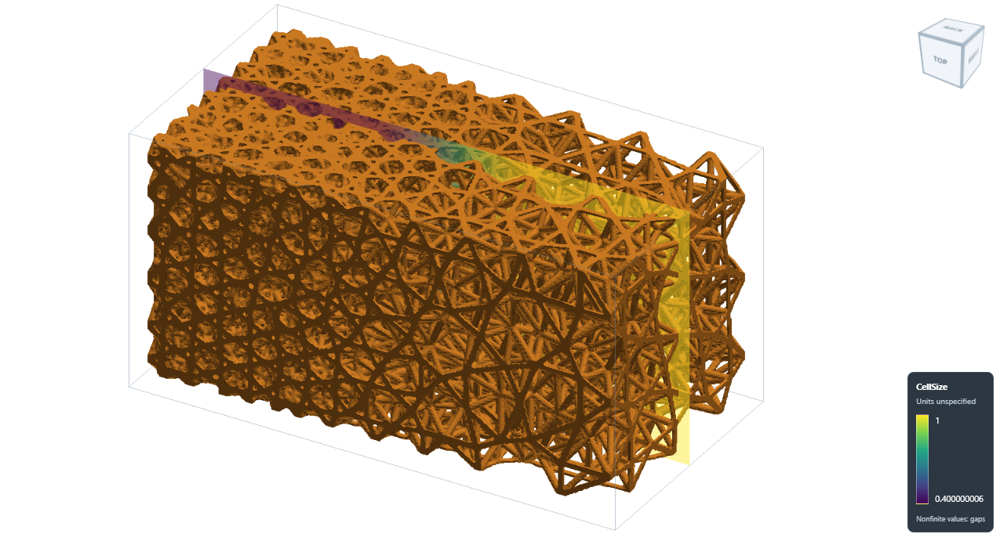
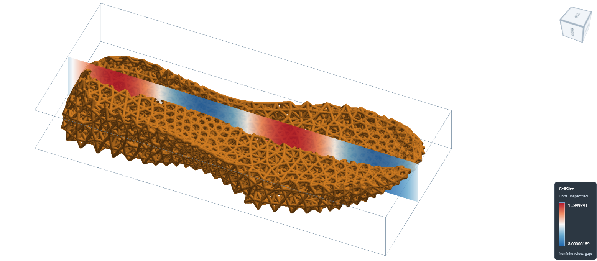
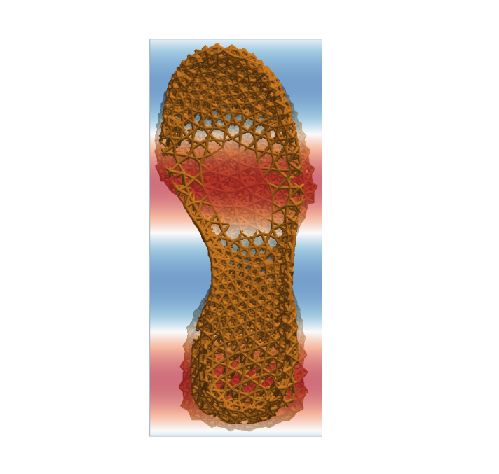

Meshing 03#
Use a scalar field to make small lattice cells in one region and larger cells
elsewhere. This example fills a 6 x 3 x 3 box with a conformal Icosahedral
lattice, then exports and cleans the STL surface.
The workflow is: define a size field → generate tet domains → fill each domain with a lattice → trim to the solid → export and clean.


Smaller tet domains create finer lattice cells; the strut radius stays constant.#
It is included at
Src/Test_json/ConformalLattice/TetSizeField/TetSizeField_Conformal.json.
The snippets below explain the main steps; use the complete file to run them.
1. Set the sampling grid#
Setup defines the grid used to sample fields and extract the lattice surface.
The example uses a box domain from -0.1 to 6.1 in x and -0.1 to 3.1 in y and z,
slightly larger than the solid. It uses res: [0.025, 0.025, 0.025].
Keep these three controls separate:
Control |
Example |
What it changes |
|---|---|---|
|
0.025 per axis |
Grid sampling and surface detail. Smaller spacing needs more memory. |
|
0.4 to 1.0 |
Target tet edge lengths, which control the lattice-cell layout. |
|
0.04 |
Strut radius for this conformal lattice; diameter is 0.08. |
All lengths use the model’s units. Keep the whole domain in one partition for
the size-field mesher. The example sets memorylimit to 4294967296 (4 GiB);
larger models or finer grids may need more.
2. Define the regional size field#
The example first loads sample-obj/TetSizeField/solid.inp as the triangle
mesh Solid. A second triangle mesh describes the fine region, x = 0 to 2.
Both inputs are supplied under Src/sample-obj/TetSizeField.
{
"Define_ScalarField_CombineGeometry": {
"field_id": "CellSize",
"default_value": 1.0,
"regions": [
{
"name": "FineRegion",
"geometry": ".//sample-obj//TetSizeField//fine_region.inp",
"value": 0.4,
"transition_width": 2.0
}
],
"overlap": "Minimum"
}
}
Inside the fine region, the target is 0.4. It smoothly increases to 1.0 between
x = 2 and x = 4, then stays at 1.0. The field uses the grid from Setup;
no grid_spacing is needed. Region geometry can also be a mesh-container ID.
The complete example saves CellSize to HDF5 using Export with
GridFieldIDs: ["CellSize"]. This saves both the values and their grid
coordinates. See Scalar Fields from Geometry Regions for overlap rules and
Reading HDF5 for readback.
3. Generate the tet cell domains#
{
"Gen_TetMesh_SizeField": {
"mesh_file": "Solid",
"export_mesh": "TetDomains",
"size_field": "CellSize",
"sampling_size": 0.75,
"hausd": 0.03,
"surface_tolerance": 0.06,
"hgrad": 1.3,
"size_iterations": 3,
"quality_report": ".//Test_results//TetSizeField_Conformal_quality.json"
}
}
TetDomains stores the volume mesh for the next step. sampling_size
controls the initial seed, while CellSize supplies the final edge-length
targets. Actual sizes also depend on the boundary and element quality.
The field must cover the entire solid and contain positive values. This mesher accepts one closed, connected triangle shell. See Tetrahedral Lattice Layout from a Size Field for the controls, supported inputs and quality report.
4. Fill the tet domains with a conformal lattice#
For the mesh-based mapping principles and tetrahedral-domain examples, see Conformal Lattice 01, especially Lattice in tetrahedron domain.
Define a lattice that maps the built-in Icosahedral unit into each tet,
then add it to the lattice field. These are steps 6 and 7 in the full workflow:
{
"6": {
"Define_Lattice": {
"la_name": "GradedTetInfill",
"definition": {
"type": "ConformalLattice",
"definition": {
"meshfile": "TetDomains",
"la_name": "Icosahedral",
"k": 0.0
}
}
}
},
"7": {
"Add_Lattice": {
"la_name": "GradedTetInfill",
"size": [1.0, 1.0, 1.0],
"thk": 0.04,
"Rot": [0.0, 0.0, 0.0],
"Trans": [0.0, 0.0, 0.0],
"Inv": false,
"Fill": false,
"Cube_Request": {}
}
}
}
Here the tet mesh controls cell placement and size. Keep size: [1, 1, 1]
for this mapping; change the scalar field to adjust the cell layout.
The next step, Intersect_Geometry with Name: "Solid", trims the struts
to the original solid. Fill: false leaves that trimming to this explicit
step instead of using the padded sampling box.
5. Export and apply basic cleanup#
After the intersection, Export writes the lattice surface to STL.
The top-level PostProcess section enables cleanup:
{
"PostProcess": {
"CombineMeshes": true,
"CleanExportedMesh": true,
"RemovePartitionMeshFile": true,
"RemoveIsolatedParts": false,
"ExportLazPts": false
}
}
Cleanup merges identical vertices, removes degenerate triangles and drops
unused vertices. It does not fill holes or repair non-manifold edges.
Omitting CleanExportedMesh leaves cleanup disabled, so older examples
remain valid. See Clean exported surface meshes for details.
Run the complete example#
Use the updated source build with the native Netgen and MMG support installed.
From Src, run:
python ArtisanMain.py -f Test_json/ConformalLattice/TetSizeField/TetSizeField_Conformal.json
The example uses paths relative to Src (JsonWorkDir: false). Keep
Test_results available for the outputs and quality report.
File |
Contents |
|---|---|
|
Scalar size field and grid coordinates. |
|
Tet cell-domain mesh. |
|
Strut centreline geometry, without FEA material or section definitions. |
|
Mesher size, shape and boundary checks. |
|
Conformal lattice surface with basic cleanup applied. |
Shoe model with varying cell size#
The same size-field approach can fill a shoe-sole model with a graded
Icosahedral lattice. The complete example is
Src/Test_json/ConformalLattice/TetSizeField/Shoes_02_SinTet_Conformal.json.
Its paths are relative to Src (JsonWorkDir: false).
Here, CellSize is defined by the expression
12 + 4*sin(2*pi*(y + 187.7188)/140). The target tet edge length varies
smoothly from 8 to 16 model units along Y: blue regions have smaller targets
and finer lattice cells, while red regions have larger targets and coarser
cells. The lattice thickness parameter stays at thk: 1.2; varying cell
size does not require changing strut thickness.


Oblique view of the graded shoe-sole lattice and its CellSize field.#


Top view showing the change in lattice-cell size along the sole.#